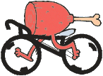
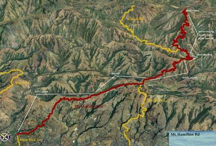

|  |
2006 Low-Key Hillclimbs Week 7: Mt Hamilton 23 Nov 2006 |
|  |
| Aerial photo of Mt Hamilton, courtesy of Stanford Cycling |
"We know not what matter is..."
Here it is: the final round in the 2006 Low-Key Hillclimbs, and as is the tradition, we've saved the biggest for last. Mt. Hamilton, at close to 19 miles with well over 4000 vertical climbing feet, a true test of cycling endurance.
Hamilton is a climb in three courses. The appetizer, a long, gentle slog through the lower, relatively heavily populated slopes to the intersection with Moody Road, a much more direct route up this part of the mountain. After a brief descent, the entree: a steady grind up to the next short descent, leading to the bridge crossing which affords the first clear look at the summit, so tangible yet still 7 miles away. Finally, the dessert, the final 7 miles to the summit access road. Then, the check: you turn off the main road, which continues down the other side to Livermore, climbing the final short wall to the observatory.
And so, on this day, you give thanks. Thanks for the completion of another year of hillclimbs and with it, perhaps, a bit of regret at the end of the cycling season.
Our insurance demands it: helmets are required. Sorry kids, no exceptions!
This fine Thanksgiving morning, we'll stage at the intersection of Alum Rock Road and Mt Hamilton Road in San Jose. Registration ends at 9:15 is a bright-and-early 9:30 start, giving all an extra half-hour to get home in time for Thanksgiving festivities.
On-line registration is available for a $2 fee from BikeReg.com.
| stats | 18.4 miles, 4345 ft, around 6% |
| format | mass start |
| time | reg 8:30-9:15 start 9:30am |
| coordinator | |
| aerial view | Stanford Cycling |
| route profile | ACTC profile ACTC profile page |
| weather | Weather Underground Weather Bonk summit (current) |
| registration form |
PDF form On-line ($2 fee) |

{kind=link}